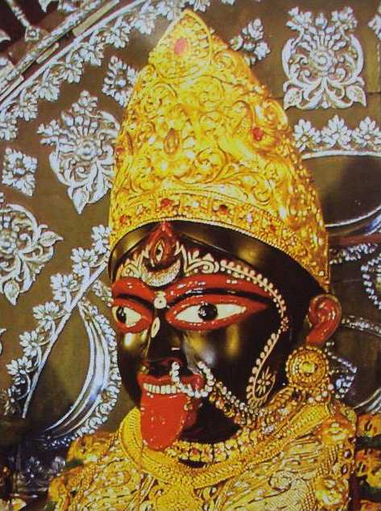

LOCAL FESTS

SARASWATI PUJA
perhaps one of the unique celebrations of Kolkata is the day celebrating the Homecoming of the Hindu Goddess of Learning, Goddess Saraswati. This is usually celebrated on the fifth day of Hindu month of Magha, known as Vasant Panchami in Northern parts of the country and Saraswati Puja in West Bengal predominately.
BASANTI DURGA PUJA
Although the more known celebration of the Homecoming of Goddess Durga is during the month of September- October, scriptures have it that originally the Puja was performed in the spring season. This form of worship of Goddess Durga was the only time that the Goddess was called upon the earth, but nowadays, the Shardiya Durga Puja has become more famous

POILA BOISHAKH
Poila Boishakh or the first day of Baisakh is the first day of a Bengali calendar year. The day is often known as Bengali New Year. This day marks the beginning of a new year for a Bengali household and thus calls for a celebration. People make extensive preparations for this day, buying new clothes, preparing extensive dishes at home and most importantly offering prayers to Gods and Goddesses.
JAMAI SHOSHTI
This beautiful commemoration celebrates the complicated but underrated relationship between a mother in law and her son in law. This is a day to bring the warmth back in the relationships and proves to be yet another reason to celebrate the blessing that is life.

KALI PUJA
Celebrated nearly twenty days after Durga Puja this festival is perhaps the other largest festival of Kolkata apart from Durga Puja. Celebrated in the honour of Goddess Kali, this festival is marked by chanting mantras during nighttime which goes up till dawn.